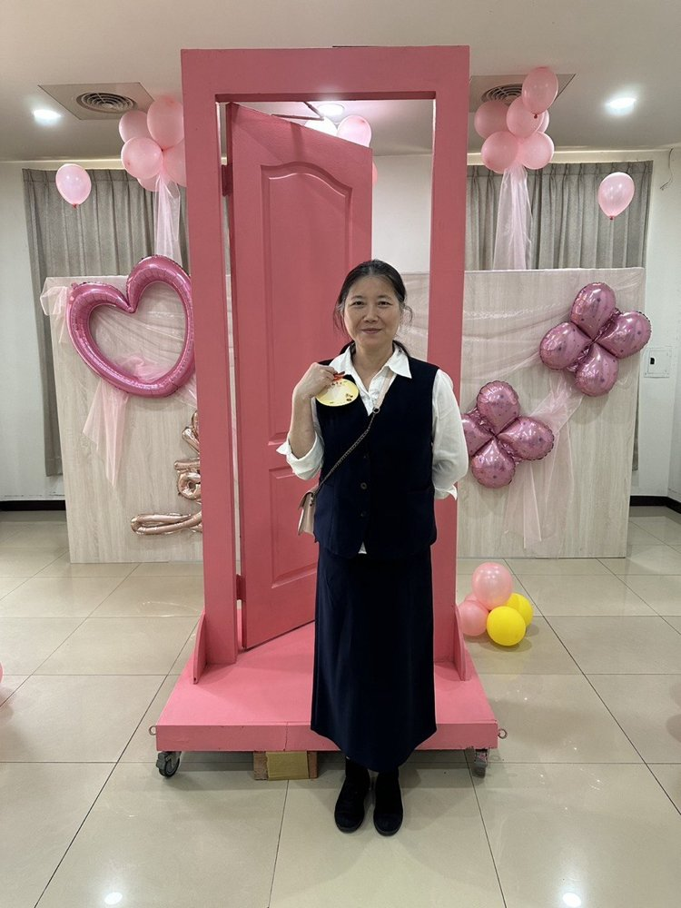
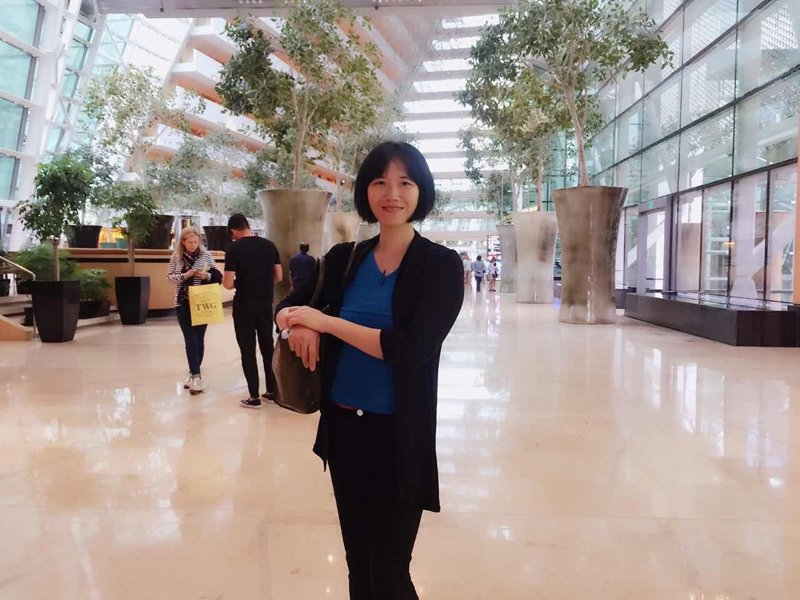
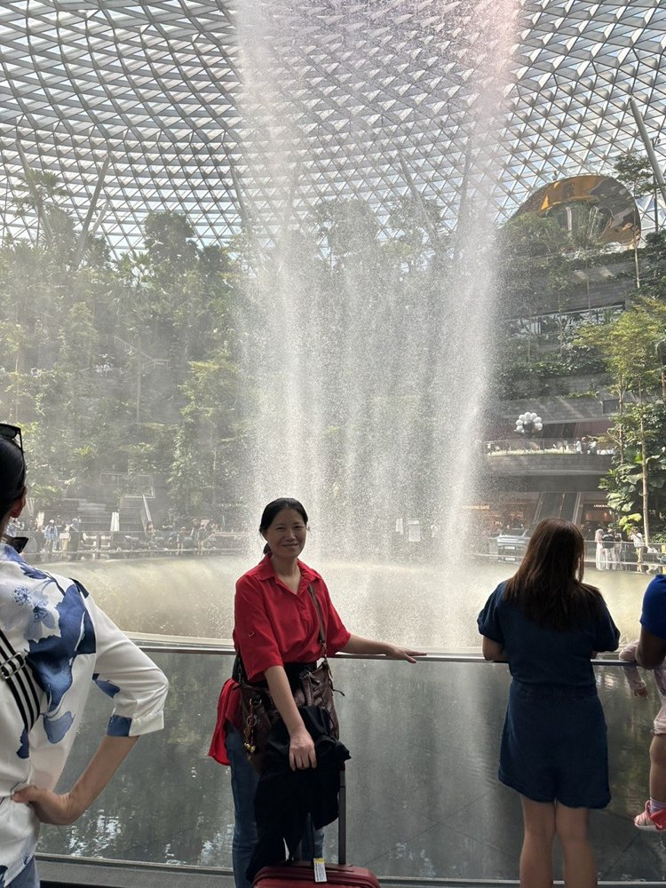
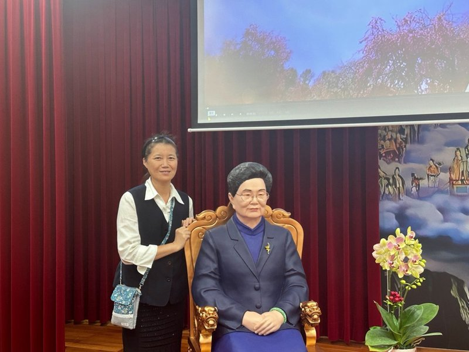

陳乙嫺
正德佛堂





正德五十週年 — 道親心得分享
發一崇德 陳乙嫺
感謝天恩師德，讓後學有緣走在這條修辦的道路上。
後學是陳乙嫺，於民國八十年在澳門求道，在佛堂學習茹素，也曾住過佛堂，那段在澳門的時光，是後學很難忘的經歷。後來後學來到台灣，兜兜轉轉過了七八年，因緣際會認識了道場同修，得以繼續參與道務。
在修辦的過程中，後學深感天恩師德的浩大，感恩點傳師的慈悲帶領，以及各位前賢的提攜成全。心中充滿感恩，感恩能夠加入正德這個大家庭。
最後，祝福正德佛堂五十週年，生日快樂！普天同慶！後學分享到這邊，謝謝各位前賢。
（依陳乙嫺道親心得整理，民國115年6月）